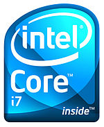

Nehalem (microarchitecture)
|  Logo for Core i7 Bloomfield processors | |
| L1 cache | 64 KB per core |
|---|---|
| L2 cache | 256 KB per core |
| L3 cache | 4 MB to 24 MB shared |
| Model | Pentium, Core, Core in and Xeon Series |
| Created | November 11, 2008 |
| Transistors | 731M to 2300M 45 nm |
| Architecture | Nehalem x86 |
| Instructions | MMX |
| Extensions | |
| Socket(s) | |
| Predecessor | Core (tock) Penryn (tick) |
| Successor | Westmere (tick) Sandy Bridge (tock) |
{kind=link}
Nehalem /nəˈheɪləm/[1] is the codename for an Intel processor microarchitecture released in November 2008.[2] Nehalem was used in the first generation of the Intel Core processors (Core i7 and i5, with Core i3 being based the subsequent Westmere and Sandy Bridge designs). Nehalem is the successor to the older Core microarchitecture (Intel Core 2 processors).[3]
The Intel codename "Nehalem" was taken from the Nehalem River.[4][5] It is an architecture that differs radically from Netburst, while retaining some of the latter's minor features. Nehalem-based microprocessors use the 45 nm process, run at higher clock speeds, and are more energy-efficient than Penryn microprocessors. Hyper-threading is reintroduced, along with a reduction in L2 cache size, as well as an enlarged L3 cache that is shared among all cores.
Nehalem was replaced with the Sandy Bridge microarchitecture, released in January 2011.
Contents
Technology[edit]
{kind=link}
- Cache line block on L2/L3 cache was reduced from 128 bytes in Netburst & Conroe/Penryn to 64 bytes per line in this generation (same size as Yonah and Pentium M).
- Hyper-threading reintroduced.
- Intel Turbo Boost 1.0.[6]
- 4–12 MB L3 cache
- Instruction Fetch Unit (IFU) containing second-level branch predictor with two level Branch Target Buffer (BTB) and Return Stack Buffer (RSB). Nehalem also supports all predictor types previously used in Intel's processors like Indirect Predictor and Loop Detector.[7]
- Second level unified (i.e. both instructions and data) TLB that contains 512 entries for small pages only, and is again 4 way associative.[8]
- 3 integer ALU, 2 vector ALU and 2 AGU per core.[9]
- Native (all processor cores on a single die) quad- and octa-core processors
- Intel QuickPath Interconnect in high-end models replacing the legacy front side bus
- 64 KB L1 cache per core (32 KB L1 data and 32 KB L1 instruction), and 256 KB L2 cache per core.
- Integration of PCI Express and DMI into the processor in mid-range models, replacing the northbridge
- Integrated memory controller supporting two or three memory channels of DDR3 SDRAM or four FB-DIMM2 channels
- Second-generation Intel Virtualization Technology, which introduced Extended Page Table support, virtual processor identifiers (VPIDs), and non-maskable interrupt-window exiting [10]
- SSE4.2 and POPCNT instructions
- Macro-op fusion now works in 64-bit mode.
- 20 to 24 pipeline stages[11]
Translation lookaside buffer sizes[12] Cache Page Size Name Level 4 KB 2 MB DTLB 1st 64 32 ITLB 1st 128 7 / logical core STLB 2nd 512 none
Performance and power improvements[edit]
It has been reported that Nehalem has a focus on performance, thus the increased core size.[13] Compared to Penryn, Nehalem has:
- 10–25% better single-threaded performance / 20–100% better multithreaded performance at the same power level
- 30% lower power consumption for the same performance
- On average, Nehalem provides a 15–20% clock-for-clock increase in performance per core.
Overclocking is possible with Bloomfield processors and the X58 chipset. Lynnfield processors use a PCH removing the need for a northbridge.[14]
Nehalem processors incorporate SSE 4.2 SIMD instructions, adding seven new instructions to the SSE 4.1 set in the Core 2 series. The Nehalem architecture reduces atomic operation latency by 50% in an attempt to eliminate overhead on atomic operations such as the LOCK CMPXCHG compare-and-swap instruction.[15]
Variants[edit]
| Processing Cores (interface) | Process | Die Size | CPUID | Model | Stepping | Mobile | Desktop, UP Server | DP Server | MP Server |
|---|---|---|---|---|---|---|---|---|---|
| Eight-Core (Quad-Channel) | 45 nm | 684 mm² | 206E6 | 46 | D0 | Beckton (80604) | |||
| Quad-Core (Triple-Channel) | 45 nm | 263 mm² | 106A4 106A5 |
26 | C0/C1 D0 |
Bloomfield (80601) | Gainestown (80602) | ||
| Quad-Core (Dual-Channel, PCIe) | 45 nm | 296 mm² | 106E4 106E5 |
30 | B0 B1 |
Clarksfield (80607) | Lynnfield (80605) | Jasper Forest (80612) | |
| Dual-Core (Dual-Channel, PCIe, Graphics Core) | 45 nm | Auburndale (canceled) | Havendale (canceled) |
- Lynnfield processors feature 16 PCIe lanes, which can be used in 1x16 or 2x8 configuration.
- 1 6500 series scalable up to 2 sockets, 7500 series scalable up to 4/8 sockets.[16]
Server and desktop processors[edit]
| Codename | Market | Cores / Threads |
Socket | Processor Branding & Model |
CPU Clock rate |
Turbo | TDP | Interfaces | L3 cache |
Release Date | Price for 1k Unit | ||
|---|---|---|---|---|---|---|---|---|---|---|---|---|---|
| Chipset | Memory | ||||||||||||
| Beckton1 | MP Server / DP Server |
8 (16) | LGA 1567 |
Xeon [17] | X7560 | 2.26 GHz | Yes | 130 W | 4× QPI 6.4 GT/s | DDR3-800 / 1066 (Up to 4x with SMB-Ready Motherboard) |
24 MB | 2010-03-30[18] | $3692 |
| X7550 | 2.0 GHz | 18 MB | $2837 | ||||||||||
| X6550 | $2461 | ||||||||||||
| L7555 | 1.86 GHz | 95 W | 4× QPI 5.86 GT/s | 24 MB | $3157 | ||||||||
| 6 (12) | E7540 | 2.0 GHz | 105 W | 4× QPI 6.4 GT/s | 18 MB | $1980 | |||||||
| E6540 | 12 MB | $1712 | |||||||||||
| E7530 | 1.86 GHz | 4× QPI 5.86 GT/s | $1391 | ||||||||||
| L7545 | 95 W | 18 MB | $2087 | ||||||||||
| 6 (6) | X7542 | 2.66 GHz | 130 W | $1980 | |||||||||
| 4 (8) | E7520 | 1.86 GHz | No | 105 W | 4× QPI 4.8 GT/s | $856 | |||||||
| E6510 | 1.73 GHz | 12 MB | $744 | ||||||||||
| Gainestown | DP Server[19] | 4 (8) | LGA 1366 |
Xeon[20] | W5590 | 3.33 GHz | Yes | 130 W | 2× QPI 6.4 GT/s | 3× DDR3-13331 | 8 MB | 2009-08-09 | $1600 |
| W5580 | 3.2 GHz | 2009-03-29[21] | $1500 | ||||||||||
| X5570 | 2.93 GHz | 95 W | $1286 | ||||||||||
| X5560 | 2.8 GHz | $1072 | |||||||||||
| X5550 | 2.66 GHz | $858 | |||||||||||
| E5540 | 2.53 GHz | 80 W | 2× 5.86 GT/s | 3× DDR3-10661 | $744 | ||||||||
| E5530 | 2.4 GHz | $530 | |||||||||||
| E5520 | 2.26 GHz | $373 | |||||||||||
| L5530 | 2.4 GHz | 60 W | 2009-08-09 | $744 | |||||||||
| L5520 | 2.26 GHz | 2009-03-30 | $530 | ||||||||||
| L5518 | 2.13 GHz | $ | |||||||||||
| 4 (4) | E5507 | 2.26 GHz | No | 80 W | 2× 4.8 GT/s | 3× DDR3-8001 | 4 MB | 2010-03-16 | $266 | ||||
| E5506 | 2.13 GHz | 2009-03-29 | |||||||||||
| L5506 | 2.13 GHz | 60 W | $423 | ||||||||||
| E5504 | 2.0 GHz | 80 W | $224 | ||||||||||
| 2 (4) | L5508 | 2.0 GHz | Yes | 38 W | 2× 5.86 GT/s | 3× DDR3-1066 | 8 MB | $ | |||||
| 2 (2) | E5503 | 2.0 GHz | No | 80 W | 2× 4.8 GT/s | 3× DDR3-800 | 4 MB | 2010-03-16 | $224 | ||||
| E5502 | 1.86 GHz | 2009-03-29 | $188 | ||||||||||
| Jasper Forest | 4 (8) | EC5549 | 2.53 GHz | Yes | 85 W | 1× 5.86 GT/s | 3× DDR3-1333 | 8 MB | 2010-02-11 | $530 | |||
| LC5528 | 2.13 GHz | 60 W | 1× 4.8 GT/s | 3× DDR3-1066 | $519 | ||||||||
| LC5518 | 1.73 GHz | 48 W | |||||||||||
| 4 (4) | EC5509 | 2 GHz | No | 85 W | $265 | ||||||||
| 2 (4) | EC5539 | 2.27 GHz | 65 W | 1× 5.86 GT/s | 3× DDR3-1333 | 4 MB | $387 | ||||||
| Bloomfield | UP Server[22] | 4 (8) | Xeon[23] | W3580 | 3.33 GHz | Yes | 130 W | 1× QPI 6.4 GT/s | 3× DDR3-1333 | 8 MB | 2009-08-09 | $999 | |
| W3570 | 3.2 GHz | 2009-03-29[23] | |||||||||||
| W3565 | 3.2 GHz | 1× QPI 4.8 GT/s | 3× DDR3-1066 | 2009-11-01 | $562 | ||||||||
| W3550 | 3.06 GHz | 2009-08-09 | |||||||||||
| W3540 | 2.93 GHz | 2009-03-29[23] | |||||||||||
| W3530 | 2.8 GHz | 2010-03-16 | $294 | ||||||||||
| W3520 | 2.66 GHz | 2009-03-29[23] | $284 | ||||||||||
| 2 (2) | W3505 | 2.53 GHz | No | 4 MB | $ | ||||||||
| W3503 | 2.4 GHz | $ | |||||||||||
| Jasper Forest | 4 (4) | EC3539 | 2.13 GHz | 65 W | DMI | 8 MB | 2010-02-11 | $302 | |||||
| 2 (4) | LC3528 | 1.73 GHz | Yes | 35 W | 3× DDR3-800 | 4 MB | |||||||
| 1 (1) | LC3518 | No | 23 W | 2 MB | $192 | ||||||||
| Lynnfield | 4 (8) | LGA 1156 |
X3480 | 3.06 GHz | Yes | 95 W | DMI | 2× DDR3-1333 | 8 MB | 2010-05-30 | $612 | ||
| X3470 | 2.93 GHz | 2009-09-08 | $589 | ||||||||||
| X3460 | 2.8 GHz | $316 | |||||||||||
| X3450 | 2.66 GHz | $241 | |||||||||||
| X3440 | 2.53 GHz | $215 | |||||||||||
| L3426 | 1.86 GHz | 45 W | $284 | ||||||||||
| 4 (4) | X3430 | 2.4 GHz | 95 W | $189 | |||||||||
| Bloomfield | Enthusiast Desktop[24] |
4 (8) | LGA 1366 |
Core i7 Extreme |
975[25] | 3.33 GHz | Yes | 130 W | 1× QPI 6.4 GT/s | 3× DDR3-1066 | 2009-05-31 | $999 | |
| 965 | 3.2 GHz | 2008-11-17 | |||||||||||
| Core i7 | 960[26] | 3.2 GHz | 1× QPI 4.8 GT/s | 2009-10-20 | $562 | ||||||||
| 950[25] | 3.06 GHz | 2009-05-31 | |||||||||||
| 940 | 2.93 GHz | 2008-11-17 | |||||||||||
| 930 | 2.8 GHz | 2010-02-28 | $294 | ||||||||||
| 920 | 2.66 GHz | 2008-11-17 | $284 | ||||||||||
| Lynnfield | Performance Desktop |
LGA 1156 |
880 | 3.06 GHz | Yes | 95 W | DMI | 2× DDR3-1333 | 2010-05-30 | $583 | |||
| 875K | 2.93 GHz | $342 | |||||||||||
| 870[27] | 2009-09-08 | $562 | |||||||||||
| 870S | 2.66 GHz | 82 W | 2010-07-19 | $351 | |||||||||
| 860 | 2.8 GHz | 95 W | 2009-09-08 | $284 | |||||||||
| 860S | 2.53 GHz | 82 W | 2010-01-07 | $337 | |||||||||
| 4 (4) | Core i5 | 760 | 2.8 GHz | 95 W | 2010-07-17 | $209 | |||||||
| 750[28] | 2.66 GHz | 95 W | 2009-09-08 | $196 | |||||||||
| 750S | 2.4 GHz | 82 W | 2010-01-07 | $259 | |||||||||
| Jasper Forest | Embedded Desktop |
1 (2) | LGA 1366 |
Celeron | P1053 | 1.33 GHz | No | 30 W | 3× DDR3-800 | 2 MB | December 2, 2010 | $160 | |
- Intel states the Gainestown processors have six memory channels. Gainestown processors have dual QPI links and have a separate set of memory registers for each link in effect, a multiplexed six-channel system.[29][30]
Mobile processors[edit]
| Codename | Market | Cores / Threads |
Socket | Processor Branding & Model |
Core Clock rate |
Turbo | TDP | L3 cache |
Interface | Release Date | Price for 1k Unit | |
|---|---|---|---|---|---|---|---|---|---|---|---|---|
| Clarksfield | Extreme / Performance Mobile |
4 (8) | µPGA 988 |
Core i7 Extreme |
940XM | 2.13 GHz | Yes | 55 W | 8 MB | * DMI * 2x DDR3-1333 * PCIe 1 x16 / 2 x8 |
2010-06-21 | $1096 |
| 920XM | 2.0 GHz | 2009-09-23 | $1054 | |||||||||
| Core i7 | 840QM | 1.86 GHz | 45 W | 2010-06-21 | $568 | |||||||
| 820QM | 1.73 GHz | 2009-09-23 | $546 | |||||||||
| 740QM | 6 MB | 2010-06-21 | $378 | |||||||||
| 720QM | 1.6 GHz | 2009-09-23 | $364 | |||||||||
Roadmap[edit]
The successor to Nehalem and Westmere is Sandy Bridge.
See also[edit]
References[edit]
- ^ I Am Nehalem
- ^ Gruener, Wolfgang (August 10, 2008), Nehalem = i7: Intel unveils new Core processor brand, TG Daily
- ^ Intel Details Upcoming New Processor Generations, Intel Corporation, March 28, 2007
- ^ Ian, King (October 20, 2008), Intel's new faster chip right on AMD's heels, The Seattle Times
- ^ Jones, George (February 9, 2008), IAMD vs Intel: The future of desktop CPUs, PC Advisor UK
- ^ http://files.shareholder.com/downloads/INTC/0x0x348508/C9259E98-BE06-42C8-A433-E28F64CB8EF2/TurboBoostWhitePaper.pdf
- ^ "Inside Nehalem: Intel's Future Processor and System".
- ^ "Inside Nehalem: Intel's Future Processor and System".
- ^ "Intel's Sandy Bridge Microarchitecture".
- ^ "Inside Nehalem: Intel's Future Processor and System". Retrieved December 29, 2014.
- ^ "Feature - Intel Core i7 - Nehalem Architecture Dive". bit-tech. Retrieved December 29, 2014.
- ^ [1]
- ^ "Intel's dual teamed approached to micro-architecture development", PC Watch (in Japanese), January 29, 2008
- ^ Botezatu, Bogdan (April 22, 2008), Intel: No Overclocking for Mainstream Nehalems, Softpedia
- ^ NO EXECUTE!
- ^ Johan De Gelas. "AnandTech - High-End x86: The Nehalem EX Xeon 7500 and Dell R810". Retrieved December 29, 2014.
- ^ AMD launches 12-core Opteron server chips, Intel counters with the 8-core Xeon 7500, engadedget.com, March 31, 2010, retrieved March 31, 2010
- ^ Nebojsa Novakovic (February 12, 2009), Intel's next bunch of fun CPUs moves to 2010, CNN International, archived from the original on March 4, 2009, retrieved March 1, 2009
- ^ Intel Xeon Processor 5500 Series Product brief, (Document Number: 321579-001US) (PDF), Intel, April 1, 2009, retrieved August 27, 2010
- ^ Core i7 to make leap to Xeon in early 2009, Legacy.macnn.com, archived from the original on December 7, 2008, retrieved November 24, 2008
- ^ Fuad Abazovic (January 28, 2009), Nehalem based Xeon comes Mar 29th, Fudzilla.com, retrieved January 28, 2009
- ^ Intel Xeon Processor 3500 Series, Intel, April 1, 2009, retrieved April 10, 2009
- ^ Jump up to: a b c d Teglet, Traian (November 13, 2008), Intel to Add New Nehalem Xeon Processor, softpedia, retrieved November 13, 2008
- ^ "Intel Core i7 Processor Extreme Datasheet, Volume 2, (Document Number: 320835-002)" (PDF). Intel. November 1, 2008. Retrieved March 24, 2009.
- ^ Jump up to: a b Worrel, Jon (February 9, 2009), Core i7 950 and 975 to replace 940 and 965, Fudzilla, retrieved February 10, 2009
- ^ Intel to launch new Core i7 960 and Celerons
- ^ Intel Core i5-750, AnandTech, June 17, 2009
- ^ Intel Quietly Announces Core i5, Xtreview, June 26, 2009
- ^ Intel Xeon Processor 5000 SequenceTechnical Documents
- ^ Intel Xeon Processor 5500 Series Datasheet Volume 2 (PDF), Intel, March 2009, retrieved May 1, 2009
Further reading[edit]
- InfoWorld review: Intel's Westmere struts its stuff, InfoWorld, March 16, 2010
- IDF: Intel Clarkdale Up Close and Personal, X-bit Labs, September 24, 2009, archived from the original on March 8, 2011
- Intel Core i7 Processors: Nehalem and X58 Have Arrived, Hot Hardware, November 3, 2008
- Intel Core i7 CPU & Nehalem Architecture Review, hardCOREware.net, November 3, 2008, archived from the original on November 6, 2008
- Intel Nehalem Core i7 Series Complete Review, PC Perspective, November 3, 2008
- Intel Nehalem Core i7 940 Review, Xtreview, October 1, 2008
- Altavilla, Dave (March 17, 2008), Intel Showcases Dunnington, Nehalem and Larrabee Processors, HotHardware
- Shrout, Ryan (March 28, 2008), Intel Slides and Nehalem architecture information, PC Perspective
- Stokes, Jon (March 28, 2007), Intel drops a Nehalem bomb on AMD's Fusion: integrated graphics, on-die memory controller, SMT, Ars Technica
- Lal Shimpi, Anand (September 18, 2007), Nehalem: Single die, 8-cores, 731M transistors, AnandTech
- Lal Shimpi, Anand (November 3, 2008), Nehalem - Everything You Need to Know about Intel's New Architecture, AnandTech
- David Kanter (April 4, 2010). "Inside Nehalem: Intel's Future Processor and System". realworldtech.com. Retrieved December 16, 2010.
- Holland, Maggie (September 19, 2007), IDF 2007: Intel debuts Nehalem, IT Pro, archived from the original on October 18, 2007
- Everything we know about Nehalem (in Spanish), CHW.net, January 5, 2008, archived from the original on July 5, 2008
- Stokes, Jon (April 9, 2008), What you need to know about Intel's Nehalem CPU, Ars Technica
- Torres, Gabriel (March 17, 2008), Details on the Forthcoming Intel Nehalem Processor, Hardware Secrets, archived from the original on May 16, 2008
- Shimpi, Anand Lal (June 5, 2008), The Nehalem Preview: Intel Does It Again, AnandTech
- Shimpi, Anand Lal (August 21, 2008), Nehalem – Everything You Need to Know about Intel's New Architecture, AnandTech
- First Look at Nehalem Microarchitecture, X-bit Labs, November 2, 2008, archived from the original on November 6, 2008
External links[edit]
- Nehalem processor at Intel.com